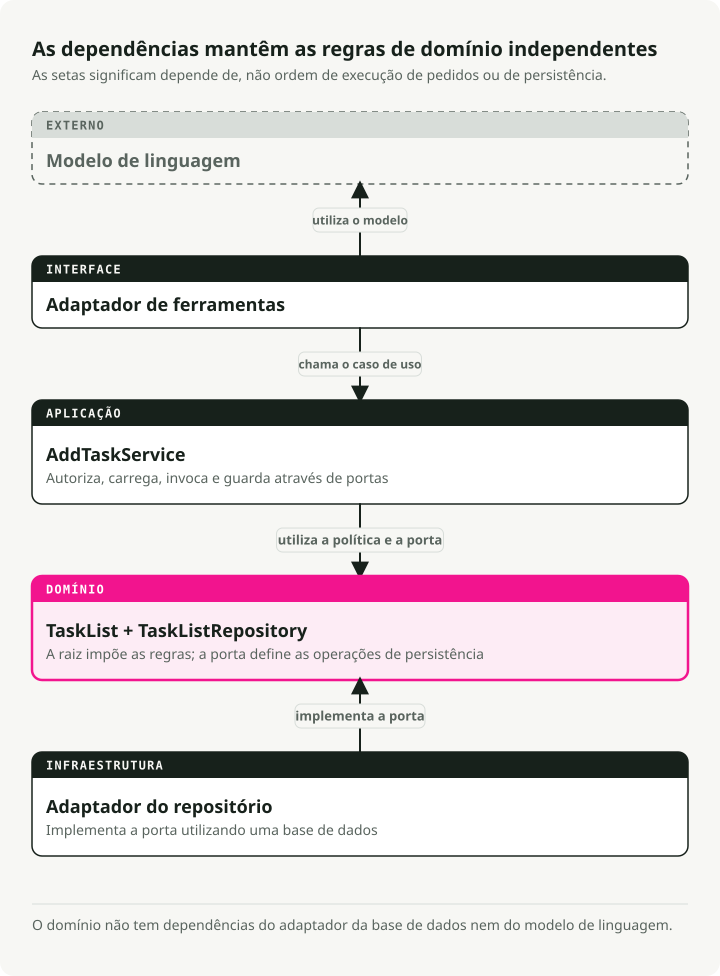
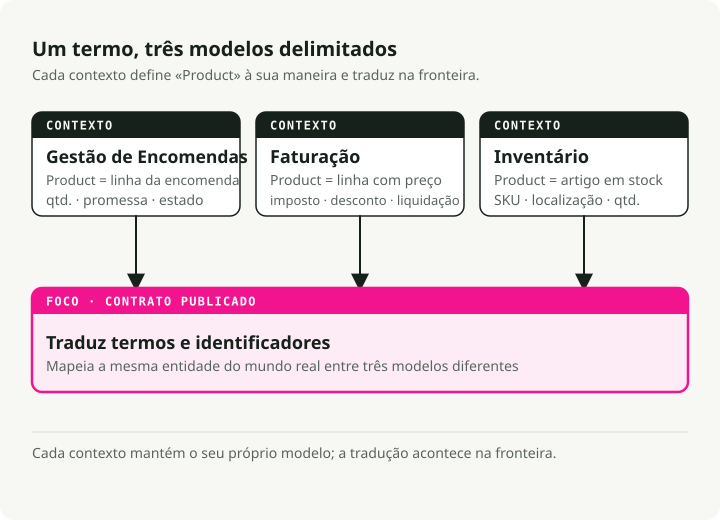
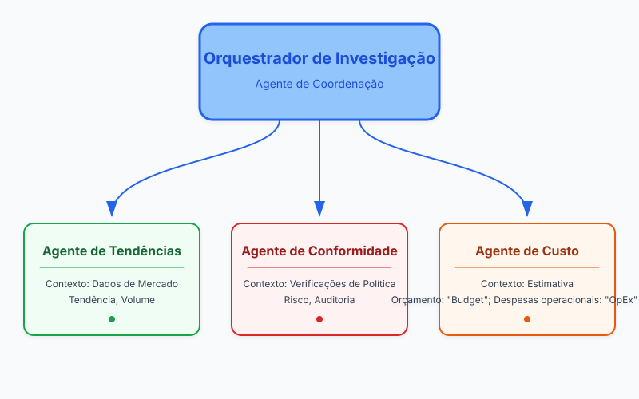
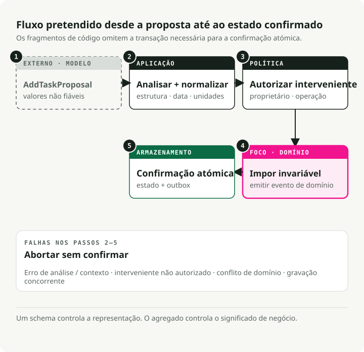
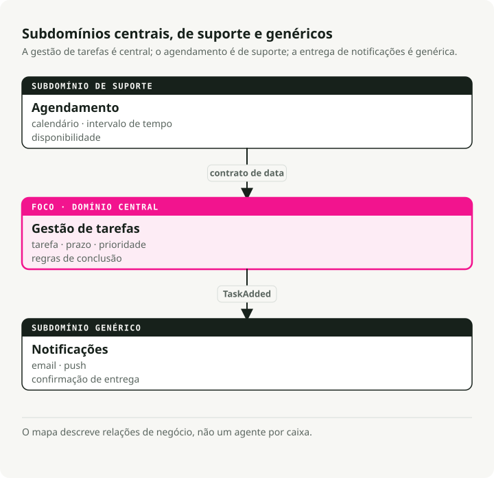

Tradução automática
Este artigo foi traduzido automaticamente a partir da versão original em inglês.
Domain-Driven Design para Agentes de IA: Contextos Delimitados, Ferramentas e Regras de Negócio
TL;DR
O domain-driven design (DDD) dá às equipas de agentes de IA um vocabulário partilhado e fronteiras claras entre subsistemas. Use-o quando os seus prompts se afastaram do negócio e as suas regras estão dispersas por templates.

Porque é que o domain-driven design importa para agentes de IA
A maioria dos projetos com agentes não falha porque o código é mau. Falha porque as pessoas que escrevem prompts e as pessoas que realmente detêm o processo de negócio não conseguem concordar sobre o significado de nada. A equipa de compliance pede uma "verificação de política" e recebe de volta um método process_data(). Ninguém sabe o que faz, por isso os requisitos derivam e o sistema endurece.
O DDD corrige isto ao colocar o domínio de negócio no centro. Não o esquema da base de dados. Não o template de prompt. O processo real do mundo que está a tentar modelar. Os efeitos práticos:
- Linguagem partilhada. Product, ops e engenharia usam todos as mesmas palavras. Quando compliance diz "pedido de reembolso", é isso que aparece no seu código, prompts e documentação.
- Âmbito focado. Constrói o que importa: os fluxos de trabalho nucleares e as regras que alguém realmente detém. Menos glue code que quebra quando os requisitos mudam.
- Adaptabilidade. Quando as políticas mudam, atualiza uma única fatia bem definida em vez de andar à procura num monólito.
Isto importa mais em domínios onde as regras mudam com frequência: finanças, saúde, operações reguladas. O DDD dá-lhe uma hipótese realista de acompanhar.
Blocos de construção estratégicos
O DDD é um conjunto de padrões, não uma única ideia. Normalmente divide-se em duas metades:
- Design Estratégico: a parte da "big picture". Definir fronteiras, equipas e como os sistemas comunicam. Isto é essencial para sistemas multiagente.
- Design Tático: os padrões ao nível do código (Entities, Aggregates) que mantêm limpa a lógica interna do seu agente.
Os conceitos abaixo são os que vai efetivamente usar no dia a dia.
Linguagem ubíqua
O vocabulário partilhado que aparece em todo o lado: reuniões, documentação, prompts, nomes de métodos. Não existe uma camada de tradução entre "linguagem do negócio" e "linguagem do código".
Se compliance diz "policy check", o seu método é run_policy_check(), não process_data(). Se os médicos dizem "admit patient", escreve admit_patient(), não add_user().
class PatientRegistry:
def admit_patient(self, patient_id: str) -> None:
"""Admit a patient to the registry - term used by medical staff."""
...
Quando a linguagem no código coincide com a linguagem na sala, as alterações de requisitos aparecem como renomeações óbvias num único sítio. Deixa de discutir o que process_data devia fazer.
Contextos delimitados
Sistemas grandes precisam de fronteiras explícitas. Porquê? Porque a mesma palavra significa coisas diferentes em partes diferentes do negócio.
Pegue em "produto" no e-commerce. No contexto de Inventário, um produto é um item de catálogo com SKUs e contagens de stock. No contexto de Faturação, é uma linha com regras de preço e cálculos de impostos. Em Gestão de Encomendas, é uma quantidade e uma promessa de entrega.
Os contextos delimitados permitem que cada subdomínio tenha a sua própria definição sem conflito. Camadas de tradução ou interfaces ligam-nos quando precisam de comunicar.

Isto mantém cada modelo pequeno e evita um único objeto "produto" gigante que tenha de satisfazer três equipas ao mesmo tempo.
Entidades e value objects
Estes são os blocos de construção básicos do seu modelo de domínio.
Entities têm identidade que persiste ao longo do tempo. Uma Task com ID 123 é a mesma tarefa mesmo que altere a descrição, o estado ou a data limite. Duas entidades são iguais se tiverem o mesmo ID, independentemente dos seus atributos.
from pydantic import BaseModel
class SupportTicket(BaseModel):
ticket_id: str # This is the identity
customer: str
issue: str
status: str = "OPEN"
def close(self) -> None:
if self.status != "OPEN":
raise ValueError("Ticket already closed")
self.status = "CLOSED"
Value objects não têm identidade. São definidos inteiramente pelos seus atributos. Dois objetos TimeSlot com a mesma hora de início e de fim são intercambiáveis. Value objects são imutáveis; em vez de alterar um, cria um novo.
from pydantic import BaseModel
class TimeSlot(BaseModel):
start: str # e.g., "2025-10-18 09:00"
end: str # e.g., "2025-10-18 10:00"
@property
def duration(self) -> int:
# Compute duration from start to end
...
Use entities para coisas que têm ciclo de vida (Order, User, AgentSession). Use value objects para descrições e medições (EmailAddress, Priority, Location).
Aggregates
Aggregates são grupos de entidades e value objects relacionados que são tratados como uma única unidade. Dentro de um aggregate, as regras de negócio têm de se manter sempre verdadeiras. Esse é o objetivo.
Cada aggregate tem uma aggregate root, a entidade que controla o acesso a tudo o que está no interior. Quer modificar algo no aggregate? Passe pela root. A root impõe invariantes para que o aggregate não fique num estado inválido.
from datetime import date
from pydantic import BaseModel, Field
class Task(BaseModel):
id: str
description: str
completed: bool = False
class Plan(BaseModel): # This is the aggregate root
id: str
tasks: list[Task] = Field(default_factory=list)
def add_task(self, task: Task) -> None:
# Business rule enforced here: no duplicate task IDs
if any(t.id == task.id for t in self.tasks):
raise ValueError("Task ID already exists")
self.tasks.append(task)
O código externo nunca toca diretamente na lista tasks. Chama sempre add_task(). É isso que garante que a regra de "sem IDs duplicados" não pode ser violada. Quando grava numa base de dados, normalmente grava o aggregate inteiro de uma só vez.
Repositórios
Os repositórios escondem a camada de persistência. Do ponto de vista do domínio, chama save(plan) e get(plan_id). O facto de essas chamadas acabarem por ir a Postgres ou Redis é problema de outra pessoa.
Daqui saem duas vantagens. Os testes podem usar um repositório em memória em vez de fazer mock de chamadas à base de dados. E quando mais tarde trocar SQLite por algo mais robusto, as regras de negócio não mudam de sítio.
from abc import ABC, abstractmethod
from pydantic import BaseModel, Field
class Task(BaseModel):
id: str
description: str
completed: bool = False
class Plan(BaseModel):
id: str
tasks: list[Task] = Field(default_factory=list)
class PlanRepository(ABC):
"""Domain layer defines the interface."""
@abstractmethod
def save(self, plan: Plan) -> None:
...
@abstractmethod
def get(self, plan_id: str) -> Plan | None:
...
class InMemoryPlanRepository(PlanRepository):
"""Infrastructure layer provides the implementation."""
def __init__(self) -> None:
self.storage: dict[str, Plan] = {}
def save(self, plan: Plan) -> None:
self.storage[plan.id] = plan
def get(self, plan_id: str) -> Plan | None:
return self.storage.get(plan_id)
O seu código de domínio só conhece PlanRepository (a interface). A camada de infraestrutura liga a implementação real.
Eventos de domínio
Os eventos de domínio capturam coisas importantes que aconteceram no seu sistema. O nome está no passado (OrderPlaced, TaskCompleted, PaymentFailed) porque descrevem factos, não comandos.
Os eventos tornam explícitos efeitos laterais que estavam implícitos. Em vez de um módulo chamar diretamente outro quando algo acontece, o domínio emite um evento. Outras partes do sistema subscrevem e reagem de forma independente.
from datetime import datetime
from pydantic import BaseModel
class TaskCompleted(BaseModel):
task_id: str
completed_at: datetime
Quando uma tarefa termina, emite TaskCompleted. Um serviço de notificações pode escutar este evento e enviar um email. Um serviço de reporting pode registá-lo para analytics. A parte importante: o aggregate da tarefa não precisa de saber nada sobre emails ou analytics. Limita-se a anunciar o que aconteceu.
É assim que a comunicação entre contextos se mantém desacoplada. Também encaixa naturalmente em sistemas multiagente, já que os agentes já reagem entre si através de eventos.
Traduzir DDD para arquiteturas de agentes
Sistemas reais com agentes têm fluxos multi-etapa, outputs de LLM que estão errados uma certa percentagem das vezes, e requisitos que mudam todos os trimestres. Os padrões do DDD encaixam bem nesses problemas.
Contextos delimitados tornam-se agentes ou skills
Cada agente (ou capacidade principal) é um contexto delimitado. Um orquestrador de research pode coordenar três agentes especializados:
- Agente de Tendências — recolhe dados de mercado usando o seu próprio vocabulário e ferramentas
- Agente de Compliance — executa verificações de política com terminologia regulatória
- Agente de Custos — estima despesas com regras específicas de finanças
Cada um tem o seu próprio modelo, terminologia e invariantes. Comunicam através de interfaces ou eventos bem definidos.

Mesmo num sistema com um único agente, pode definir contextos internos. Um módulo de Planeamento e um módulo de Execução, cada um com o seu próprio modelo de domínio.
Os prompts respeitam a linguagem ubíqua
Use termos do domínio nos system prompts, descrições de ferramentas e assinaturas de funções. Se os especialistas de compliance dizem "policy check", essa expressão exata deve estar nos seus prompts e no seu código. O benefício é simples: quando o trace de um agente mostra run_policy_check, a equipa de compliance consegue lê-lo sem tradutor.
O estado torna-se explícito em entities
Os LLMs são muitas vezes stateless, mas agentes reais acompanham bastante estado: sessões de conversa, objetivos, resultados intermédios, outputs de ferramentas. Modele estes elementos como entities ou value objects:
- entity
ConversationSessioncom ID e histórico de mensagens - entity
Taskque representa unidades de trabalho - value object
ToolOutputpara resultados imutáveis
Quando estes passam a ser objetos explícitos, pode associar-lhes validação e regras de negócio. Uma entity Task pode recusar ser concluída até que as suas dependências terminem, sem que essa regra tenha de viver em três templates de prompt diferentes.
Aggregates expressam planos do agente
Uma aggregate root Plan governa a lista de tarefas e impõe os limites que interessam ao negócio. Quando um LLM propõe acrescentar 50 tarefas e a sua política é 10, o aggregate recusa os excessos. Quando sugere trabalho duplicado, o aggregate também rejeita. O modelo pode ser entusiasta; o domínio mantém-se são.
Eventos de domínio conduzem a orquestração
Os agentes emitem eventos como ResearchCompleted, ThresholdExceeded ou PolicyViolationDetected. Outros agentes ou serviços subscrevem e reagem. Nada está hard-wired, o que torna barato adicionar um novo listener (ou um novo agente).
As regras de negócio envolvem as ações de IA
Os outputs de LLM passam por serviços de domínio ou métodos de entidades em vez de irem diretamente para a base de dados. Se um modelo sugerir um reembolso acima dos limites da política, o seu RefundRequest valida e rejeita. O LLM pode improvisar; as regras de negócio têm a palavra final.
A Anti-Corruption Layer (ACL)
Um LLM é probabilístico e ocasionalmente falha de formas surpreendentes. O seu modelo de domínio tem de se manter determinístico. Os dois não podem encontrar-se diretamente.
Esse é o trabalho da Anti-Corruption Layer (ACL).

A ACL fica entre o modelo e o domínio. Traduz o output bruto do LLM para os tipos estritos que o seu domínio espera.
- Ingest texto bruto ou JSON do LLM.
- Validate estrutura e tipos com modelos Pydantic.
- Sanitize valores (sem preços negativos, sem transações com datas futuras, etc.).
- Translate DTOs (Data Transfer Objects) para entidades de domínio.
Se a validação falhar, a ACL rejeita os dados e muitas vezes devolve o erro ao LLM para que volte a tentar. O ponto é simples: só dados válidos tocam na sua lógica central de negócio.
Exemplo: um assistente de tarefas modelado com DDD
Vamos construir um assistente pessoal de tarefas que trata pedidos como "Lembra-me de comprar leite amanhã" ou "O que tenho na minha lista de tarefas?". O walkthrough aplica os componentes de DDD acima, um de cada vez.
1. Mapear os contextos
Comece por dividir o problema em subdomínios:
- Gestão de Tarefas — tratamento de itens to-do e lembretes (domínio core)
- Agendamento — eventos de calendário e reuniões
- Notificações — envio de alertas e emails
Vamos focar-nos primeiro em Gestão de Tarefas. Os outros podem evoluir como contextos delimitados separados ou agentes acompanhantes.

2. Falar a mesma linguagem
Escolha o vocabulário com as pessoas que realmente detêm o processo (ou use bom senso para uma app pessoal): "tarefa", "prazo", "lembrete", "prioridade". Depois use esses termos exatos nos templates de prompt, nomes de métodos e labels da UI. Não existe uma tradução "de negócio" separada.
3. Captar entities, value objects e eventos
Agora modele os conceitos centrais:
- Entity:
Taskcom identidade (id) e estado mutável (completed) - Value object: enum
Priority(imutável, definido pelo seu valor) - Evento de domínio:
TaskCompletedEventpara sinalizar quando o trabalho termina
from datetime import datetime, date, timezone
from enum import Enum
from pydantic import BaseModel, Field
class Priority(Enum):
"""Value object: priority is defined by its value alone."""
LOW = 1
NORMAL = 2
HIGH = 3
class TaskCompletedEvent(BaseModel):
"""Domain event: announces a task was completed."""
task_id: str
time: datetime
class Task(BaseModel):
"""Entity: identity persists even as attributes change."""
id: str
description: str
created_at: datetime = Field(default_factory=lambda: datetime.now(timezone.utc))
due_date: date | None = None
priority: Priority = Priority.NORMAL
completed: bool = False
def mark_completed(self) -> TaskCompletedEvent:
"""Business rule: can't complete an already-completed task."""
if self.completed:
raise ValueError("Task is already completed.")
self.completed = True
return TaskCompletedEvent(task_id=self.id, time=datetime.now(timezone.utc))
A regra de negócio (não se pode concluir uma tarefa já concluída) vive no método da entity, não num template de prompt.
4. Moldar o aggregate
O TaskList é a nossa aggregate root. Contém várias entities Task e impõe regras de consistência entre elas. Todas as modificações passam pelos métodos da root.
from datetime import date
from pydantic import BaseModel, Field
class Task(BaseModel):
id: str
description: str
due_date: date | None = None
completed: bool = False
class TaskList(BaseModel):
"""Aggregate root: enforces invariants across all tasks."""
owner: str
tasks: list[Task] = Field(default_factory=list)
def add_task(self, task: Task) -> None:
"""Business rule: no duplicate tasks on the same day."""
if any(
existing.description == task.description
and existing.due_date == task.due_date
for existing in self.tasks
):
raise ValueError("A similar task on that date already exists.")
self.tasks.append(task)
def get_pending(self) -> list[Task]:
"""Query helper: find tasks that aren't done yet."""
return [task for task in self.tasks if not task.completed]
TaskList.model_rebuild() # Resolve forward references for Pydantic.
O código externo nunca toca diretamente em tasks. Passa sempre por add_task() ou por outro método da root, que é o que mantém honesta a regra de "sem duplicados".
5. Envolver a persistência num repositório
O repositório abstrai o armazenamento. A camada de domínio não sabe se as tarefas vivem em memória ou em Postgres.
from pydantic import BaseModel, Field
class Task(BaseModel):
id: str
description: str
completed: bool = False
class TaskList(BaseModel):
owner: str
tasks: list[Task] = Field(default_factory=list)
TaskList.model_rebuild() # Resolve forward references for Pydantic.
class TaskRepository:
"""Abstracts task storage - in-memory implementation for simplicity."""
def __init__(self) -> None:
self._data: dict[str, TaskList] = {}
def get_task_list(self, owner: str) -> TaskList:
"""Retrieve a user's task list, or create a new empty one."""
return self._data.get(owner, TaskList(owner=owner))
def save_task_list(self, task_list: TaskList) -> None:
"""Persist changes to the task list."""
self._data[task_list.owner] = task_list
Em produção, trocaria isto por uma implementação suportada por base de dados (usando SQLAlchemy ou Postgres diretamente) sem tocar no código de domínio.
6. Executar o fluxo
Quando um utilizador faz um pedido, o fluxo é assim:
from datetime import date, timedelta
from uuid import uuid4
from pydantic import BaseModel, Field
class Task(BaseModel):
id: str
description: str
due_date: date | None = None
completed: bool = False
class TaskList(BaseModel):
owner: str
tasks: list[Task] = Field(default_factory=list)
def add_task(self, task: Task) -> None:
if any(
existing.description == task.description
and existing.due_date == task.due_date
for existing in self.tasks
):
raise ValueError("A similar task on that date already exists.")
self.tasks.append(task)
class TaskRepository:
def __init__(self) -> None:
self._data: dict[str, TaskList] = {}
def get_task_list(self, owner: str) -> TaskList:
return self._data.get(owner, TaskList(owner=owner))
def save_task_list(self, task_list: TaskList) -> None:
self._data[task_list.owner] = task_list
TaskList.model_rebuild() # Resolve forward references for Pydantic.
# User says: "Remind me to buy milk tomorrow"
# (In reality, an LLM would parse this into structured data)
user_input = "Remind me to buy milk tomorrow"
intent = "add_task"
# Initialize repository
repo = TaskRepository()
if intent == "add_task":
# 1. Load the user's task list
task_list = repo.get_task_list(owner="User123")
# 2. Create a new task entity
task = Task(
id=str(uuid4()),
description="buy milk",
due_date=date.today() + timedelta(days=1),
)
# 3. Domain layer enforces business rules
try:
task_list.add_task(task)
repo.save_task_list(task_list)
print(f"Task '{task.description}' added for {task.due_date}.")
except Exception as exc:
print(f"Sorry, I couldn't add that task: {exc}")
As camadas mantêm-se separadas:
- Camada LLM analisa linguagem natural para dados estruturados (intenção + parâmetros)
- Camada de domínio impõe regras de negócio através de métodos das entities
- Camada de repositório trata da persistência sem contaminar a lógica de domínio
O LLM pode ser criativo no parsing, mas o domínio decide o que é consistente. Se tentar adicionar uma tarefa duplicada, a aggregate root rejeita-a. Não precisa de uma cláusula especial no seu prompt para esse caso.
Ferramentas para dar vida ao modelo
O DDD não exige frameworks especiais. Ainda assim, algumas ferramentas tornam a implementação mais fluida, especialmente para agentes de IA.
FastAPI
FastAPI mapeia-se bem para camadas DDD. Use routers para separar contextos delimitados (/tasks, /schedule), modelos Pydantic para validação de pedidos e respostas, e dependency injection para ligar repositórios.
Estruture o seu projeto em camadas:
project/
├── domain/ # Pure business logic (entities, aggregates, value objects)
├── application/ # Use cases and command handlers
├── infrastructure/ # Repositories, databases, external APIs
└── interface/ # FastAPI routers and HTTP contracts
Esta organização em camadas (por vezes chamada "onion architecture") evita que as alterações se propaguem por toda a codebase. Trocar a base de dados significa tocar em infrastructure/ e nada mais. Mudar a UI significa tocar em interface/ e nada mais.
Pydantic e Pydantic AI
Pydantic impõe invariantes e valida dados em runtime. Use-o para entities, value objects e, especialmente, para validar outputs de LLM.
Pydantic AI leva isto mais longe: impõe que as respostas do LLM correspondam aos seus schemas de domínio. Defina um AddTaskCommand com campos obrigatórios, e o Pydantic AI valida o output JSON do modelo antes de o seu código lhe tocar.
Instructor é outra opção aqui. Faz patch a clientes OpenAI (e outros) para devolverem diretamente modelos Pydantic, o que é uma forma leve de implementar uma Anti-Corruption Layer.
Bibliotecas auxiliares de DDD
- DDDesign — fornece classes base para entities, repositórios e value objects construídos sobre Pydantic
- Protean — um framework completo para DDD, CQRS e event sourcing se quiser algo que já venha com muitas funcionalidades prontas a usar
A maioria dos developers Python ignora estas opções e usa classes vanilla com Pydantic, mas vale a pena explorá-las em projetos grandes.
Ferramentas orientadas a eventos
Para eventos de domínio, considere:
- blinker — dispatcher de eventos leve em processo
- redis-py Pub/Sub ou RabbitMQ — para eventos distribuídos entre serviços ou agentes
- asyncio event patterns — se já estiver a usar async
Os eventos são essenciais para orquestração multiagente. Um agente emite ResearchCompleted; os outros subscrevem e reagem. Nenhum agente precisa de saber quem está a escutar.
Frameworks de agentes
LangChain, LangGraph, Haystack, Semantic Kernel, LlamaIndex, AutoGen, Google ADK, smolagents e CrewAI fornecem estrutura para fluxos de trabalho de agentes. Use-os na sua camada de aplicação ou infraestrutura, e envolva-os em interfaces que pertencem à sua camada de domínio. Trocar de framework passa então a ser uma alteração contida.
Testes
Uma vantagem prática do DDD: a camada de domínio é testada sem ter a stack toda a correr.
- PyTest para testes unitários em entities e aggregates
- Repositórios fake (em memória) para testes de integração
- LLM stubs que devolvem outputs predeterminados
O seu código de domínio nunca deve precisar de um LLM live para correr os testes. O LLM é um detalhe de implementação. Os testes validam regras de negócio.
Checklist para começar
Uma ordem prática de operações quando inicia um novo projeto com agentes:
- Entreviste especialistas do domínio. Esboce a linguagem ubíqua. Escreva-a.
- Mapeie contextos delimitados. Desenhe os subdomínios e assinale onde precisam de comunicar entre si. Comece por um contexto core.
- Modele entities e value objects. Que coisas têm identidade? Que coisas são apenas valores? Incorpore invariantes nos respetivos métodos.
- Defina aggregate roots. Agrupe entidades relacionadas sob uma root que imponha regras de consistência.
- Crie interfaces de repositório. Ainda não implemente o armazenamento. Defina apenas
save()eget(). O domínio mantém-se alheio a onde os dados vivem. - Emita eventos de domínio. Para alterações significativas (encomenda efetuada, tarefa concluída), emita eventos. Ligue listeners mais tarde, conforme necessário.
- Envolva outputs de LLM em schemas. Use modelos Pydantic para impor contratos. Texto livre não deve infiltrar-se no seu domínio.
- Adicione orquestração. Construa serviços de aplicação que coordenem agentes através de comandos estruturados ou eventos.
A regra que realmente importa: comece pelo domínio, não pela stack tecnológica. Primeiro compreenda o problema de negócio. Modele-o explicitamente. Depois traga o tooling de IA para servir esse modelo.